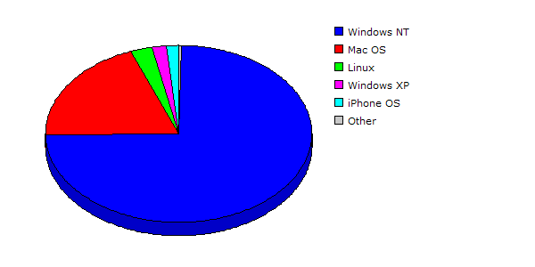

| Rank |
Operating System |
Hits |
Visitors |
| 1 |
Windows NT |
27916 |
23.48% |
3264 |
74.42% |
| 2 |
Mac OS |
9432 |
07.93% |
850 |
19.38% |
| 3 |
Linux |
450 |
00.38% |
115 |
02.62% |
| 4 |
Windows XP |
80653 |
67.84% |
76 |
01.73% |
| 5 |
iPhone OS |
420 |
00.35% |
67 |
01.53% |
| 6 |
Windows 2000 |
10 |
00.01% |
8 |
00.18% |
| 7 |
Windows |
4 |
00.00% |
4 |
00.09% |
| 8 |
Windows Server 2003 |
2 |
00.00% |
2 |
00.05% |
| |
Total |
118887 |
4386 |
|
Description: This report contains statistics about the operating systems that your visitors use.
|
|